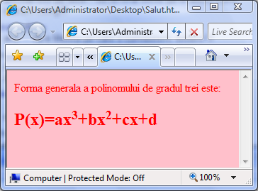

Scriere ca exponent
Pentru ca anumite caractere sau portiuni de text sa fie scrise ca exponent (indice superior)
este necesar ca acele caractere sa fie cuprinse intre etichetele SUP si respectiv /SUP. Asemenea
moduri de scriere sunt foarte importante daca, de exemplu, pagina web contine expresii algebrice.
Iata un exemplu in care o expresie polinomiala este scrisa utilizand perechea de etichete SUP si /SUP:

Inapoi la Formatare fonturi